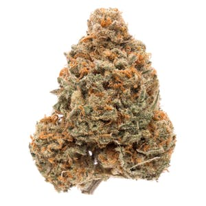
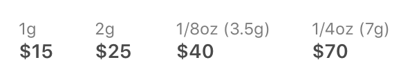

ACDC is a phenotype of the high-CBD strain Cannatonic (also known as the CBD Queen) that was selected by Dr. William Courtney after receiving a packet of seeds from its original breeder, Spain-based Resin Seeds.
The resulting ACDC, which is only available on the market as a clone, is exceptionally high in CBD, with a 20:1 CBD-to-THC ratio, according to testing from SC Labs. Resin Seeds describes the plant’s aroma as a mix of cherry, diesel, gas, and Mandarin peel. Myrcene is a dominant terpene in ACDC.
ACDC is a parent to several CBD-rich hybrids. Sin City Seeds offers four ACDC hybrids with varying CBD-to-THC ratios — Thunderstruck (an S1 hybrid of ACDC and ACDC), Treasure Island (Swiss Gold and ACDC), HarleSin (ACDC and Harlequin), and Incredible Power (OmRita, BluePower, and ACDC).
Other notable hybrids include TOCI (ACDC and Xena), EMT (ACDC and Canna-Tsu) from Med Tree Seeds, Valhalla (ACDC and Sky Dragon) from Love Genetics, and CBD Rich Blessing from Bodhi Seeds. A hybrid of ACDC and a CBD-rich Good Medicine male, CBD Rich Blessing has, in turn, been used by its breeder to cultivate several other CBD-rich hybrids.
The strain reportedly grows to average height, producing thin leaves and medium yields of big, dewy buds. The strain grows best indoors and in warm environments. It’s reported to flower in 63-70 days, possibly longer in colder areas. ACDC can be finicky, so novice and intermediate growers with limited grow space may want to look elsewhere for a high-CBD plant.
The ACDC clone typically produces short, bushy plants with thin leaves that tend to grow about four feet tall. An ACDC clone Harborside submitted for genetic testing by Phylos Bioscience showed moderate levels of genetic variation.

...
...